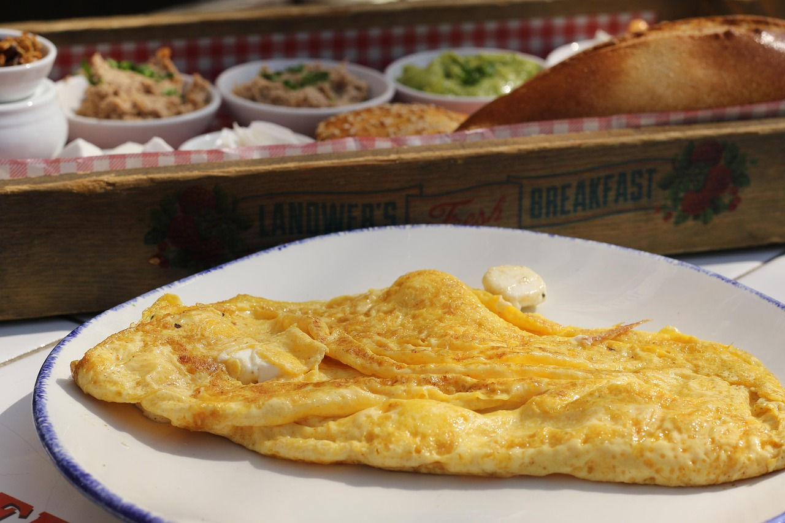

Bootstrap Image Project Rewrite
How to make a basic omelette
(Based on how I do it)
To make an omelette is quite easy, and is one of the first things I learned how to make on a stove.
| Step 1: | Get your eggs and crack them into a bowl, I like to use two or three. |
| Step 2: | Once you have the yolks in the bowl, put in your seasonings such as pepper or Italian seasoning in my case, then whisk the eggs using a butter knife. Until all the yolks are broken and the mixture is stirred. |
| Step 3: | Grab a medium-sized pan and put it on the stove, I have an electric stove that I set to half temperature. I melt butter into the pan beforehand to prevent sticking. |
| Step 4: | Pour the contents of your bowl into the pan and prod the edges with the spatula while they cook. Do this until one side of the mixture is solid and then flip it and do the other side. After the first side is flipped, you can add meat or cheese. I use Deli Ham. | Step 5: | Once the other side is solid, carefully flip half of the egg mixture with your spatula over the other half. The flip can be difficult, and if you fail at making an omelette, you can always turn it into scrambled eggs! |



Hover over the slides for additional information!